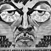
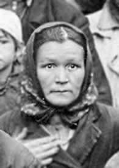
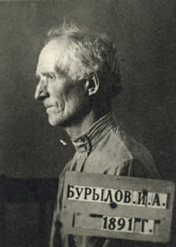
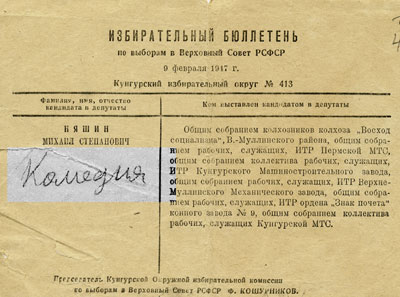
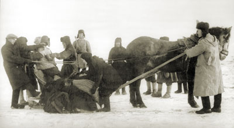
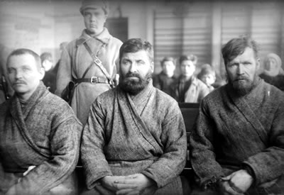
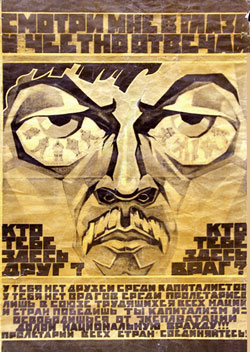

Online Exhibit | Reflections | Traveling Exhibit | Teacher Resources | About
© 2006–2021, Center for History and New Media, George Mason University.

The Gulag held many types of prisoners. It served as the Soviet Union’s main penal system: robbers, rapists, murderers, and thieves spent their sentences not in prisons but in the Gulag.
In addition, the Gulag held political prisoners, a group including not only real opponents of the Soviet regime but also many innocents caught up in the paranoid clutches of the Soviet secret police. Most prisoners were the victims of arbitrary and severe legal campaigns under which petty theft, lateness, or unexcused absences from work were punished by many years in these concentration camps.
In the Stalin era, a person who arrived late to work three times could be sent to the Gulag for three years.
In the Stalin era, many were sent to the Gulag for up to 25 years for telling an innocent joke about a Communist Party official.
In the Stalin era, a person could be sent to the Gulag for up to ten years for such petty theft.

Trying to feed her four hungry children during the massive 1932-1933 famine, the peasant mother allegedly stole three pounds of rye from her former field—confiscated by the state as part of collectivization. Soviet authorities sentenced her to ten years in the Gulag. When her sentence expired in 1943, it was arbitrarily extended until the end of the war in 1945. After her release, she was required to live in exile near her Gulag camp north of the Arctic Circle, and she was not able to return home until 1956, after the death of Stalin. Maria Tchebotareva never found her children after her release.
Courtesy of the Gulag Museum at Perm-36.
Seeking the appearance of democracy, the Soviet Union held elections, but only one Communist Party candidate appeared on the ballot for each office. Fear of punishment ensured that nearly all Soviet citizens “voted” by taking their ballot and ceremoniously placing it into a ballot box.
In 1949, Ivan Burylov, a beekeeper, protested this absurd ritual by writing the word “Comedy” on his “secret” ballot. Soviet authorities linked the ballot to Burylov and sentenced him to eight years in camps for this “crime.”
Courtesy of the State Perm Region Archive of Political Repression.
The “secret” voting ballot of Ivan Burylov showing where he had written the word “Comedy.”
Courtesy of the State Perm Region Archive of Political Repression.
Arrest of a so-called “rich peasant” in 1930. This peasant, Mikhailov, had attempted escape from a state-owned farm where he had been sent into exile.
Courtesy of the Central Russian State Film and Video Archive.
Trial of so-called “rich peasants” in 1929. Stalin’s drive to seize all private land in the 1920s and 1930s met significant resistance. Some victims were shot, some were arrested and sent into the Gulag camps, and many were exiled to remote parts of the country.
Courtesy of the Central Russian State Film and Video Archive.
“Look Me in the Eyes and Tell Me Honestly:Courtesy of the State Perm Region Archive of Political Repression.
Who is your friend? Who is your enemy?
You have no friends among capitalists.
You have no enemies among the workers.
Only in a union of the workers of all nations will you be victorious over capitalism and liberated from exploitation.
Down with national antagonisms!
Workers of the world unite!”
Online Exhibit | Reflections | Traveling Exhibit | Teacher Resources | About
© 2006–2021, Center for History and New Media, George Mason University.